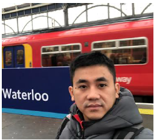

Su Duy Hien
Senior Automation Test Engineer | SDET | Test Framework & AI-Assisted QA Architecture
Senior Automation Test Engineer with 15+ years across software development, test automation leadership, and enterprise automation framework development. Specialized in designing large-scale Web/UI, API, GraphQL, desktop, and distributed regression systems for complex billing and customer-care platforms.

Knowledge Graph Visual
Visual map of connected strengths: enterprise .NET test platform at the center, supported by modern browser testing, UI-to-API conversion, AI-driven test modernization, intelligent agent & knowledge systems, distributed orchestration, and desktop automation.
Recent Strategic Focus
- Built the QAutomate Knowledge Graph — Roslyn static analysis across all 7 .NET projects extracted 232,694 cross-project call edges into a 6,810-class map and 6,676-method catalog. Each method carries layer, entity, composite importance ranking (6-dimension scoring), and a semantic summary produced by a multi-stage pipeline (XML docs → heuristic generation → AI enhancement). CLI query tools resolve test-to-method dependencies and call trees in milliseconds — replacing broad file scans with token-efficient targeted lookups that underpin all AI-assisted pipeline work.
- Mapped QAutomate's enterprise architecture: Selenium is the thin web adapter; .NET FrameworkCore (WCF/ASM, GraphQL client, DB, MQ) and desktop automation are the retained high-value core.
- Defined hybrid modernization strategy: Playwright + TypeScript as browser/AI layer, .NET retained via gateway contracts — optimize the ~1,100-file web adapter, not the 6,500+ .NET files.
- Designed UI-to-GraphQL/API conversion: decision matrix replacing business-action UI steps with GraphQL mutations; browser-visible assertions kept as UI smoke/E2E.
- Built AI-assisted test modernization pipeline (Steps 3A–3F + Step 4): call-graph inventory → readiness gates → rule generation → pilot/bulk conversion → 10% smoke gate → AutoRunner handoff → wake-on-failure repair. Three human QA gates control blast radius.
- Verification-Gated Knowledge Promotion — fix is provisional (instant in-run reuse), promoted to per-spoke rules after 1 green rerun, to shared-generic rules after 2+ independent green spokes. Oracle = rerun pass/fail, not frequency. Equivalent to canary deploy for AI-generated knowledge.
- 5-store agent memory architecture — generic rules · per-dialog rules · in-run fast-path cache · AITask (workflow state, idempotent resume) · TestRunContext (append-only event log, 3-strike escalation, lifecycle tracing).
Professional Experience
Senior Automation Test Engineer
Hansen develops billing, customer care, and data management platforms for utility and telecom industries.
- Design and maintain enterprise automation frameworks for Web UI, desktop UI, API, GraphQL, and integration testing using C#, NUnit 3, Selenium 4, TestStack.White, WCF/ASM services, and database-backed validation.
- Develop internal automation tools such as AutoConsole, AutoMonitor, AutoInstaller, and AutoSmoke to support regression execution, environment setup, monitoring, and reporting.
- Built the QAutomate Knowledge Graph — a Roslyn-based .NET call graph extractor covering all 7 projects (232,694 cross-project call edges, 6,810 classes, 6,676 ranked methods). Implemented a multi-stage summarization pipeline (XML docs, heuristic generation with CCB domain dictionary, AI enhancement) and a composite importance-scoring system. CLI query tools enable AI agents to precisely locate tests, reusable step methods, and dialog wrappers without scanning thousands of files, eliminating unnecessary LLM token consumption and enabling accurate AI-driven test analysis and migration.
- Support a large-scale regression suite of roughly 7,000 automated test cases across Oracle/PostgreSQL database modes, Internal/LDAP/SSO authentication, Oracle AQ/Kafka queue modes, and clustered/standalone product servers.
- Review test cases for feature readiness, naming conventions, clarity, stability, and regression suitability before approving inclusion in the automated suite.
- Analyze automation architecture and migration strategy for Selenium/.NET to Playwright/TypeScript, recommending a hybrid approach that preserves QAutomate's .NET service, DB, MQ, and desktop foundation while modernizing the browser and AI-agent layer.
- Define conversion strategy for PSM/NUI UI tests to GraphQL or ASM/API tests, focusing on reduced browser runtime, stronger API coverage, and retained UI smoke/E2E safety nets.
- Integrate automated tests into TeamCity pipelines, manage Git-based workflows, prepare quality reports, and advise Delivery Managers on release and regression risks.
- Presented Automation Framework architecture during an onsite business visit in the UK.
Test Automation Leader
- Led the Automation Test Team and defined automation strategy for key EDI projects.
- Developed UI automation and performance test suites using Selenium, TestComplete, and JMeter.
- Built an internal Test Management System using C#, WPF, and MVVM architecture.
Research Engineer / Senior Software Developer
- Worked as an R&D engineer for the TestArchitect automation tool, designing new automation features and improving engine performance.
- Researched integration approaches between TestArchitect and Selenium/Appium.
- Built Action Recorder capabilities for web and mobile automation.
- Developed TestArchitect for Visual Studio using C#, WPF, MVVM, and .NET 4.5.
Software Developer
- Developed C++, C#, and .NET software modules for semiconductor machine control systems.
- Implemented system components for Wire Bonder and Die Bonder equipment using multi-layer architecture and real-time control logic.
Process & Collaboration
Scrum/Agile delivery, Jira, requirement analysis, user story collaboration, peer review, test review, exploratory testing, risk-based test planning, regression reporting, and cross-functional consultation on automation techniques.
This HTML resume is designed to print cleanly to PDF from a browser.